REAR DIFFERENTIAL CARRIER ASSEMBLY (w/ Differential Lock) > REASSEMBLY |
| 1. INSPECT DIFFERENTIAL SIDE GEAR BACKLASH |
 |
Install the 2 thrust washers to the 2 side gears.
Install the 4 thrust washers to the 4 pinion gears.
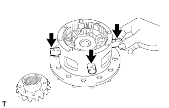 |
Install the 2 side gears into the differential case.
Install the holder into the differential case.
Install the 4 pinion gears.
Align the holes of the differential case and pinion shaft, and install the 3 pinion shafts.
Align the matchmarks and install the differential cover to the differential case.
Temporarily install the 5 bolts and 3 pinion shaft pins.
Using a T10 "TORX" socket, tighten the 5 bolts and 3 pinion shaft pins.
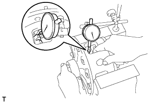 |
Using a dial indicator, while holding the side gear, measure the backlash.
| Specified Condition | Specified Condition |
| 1.53 to 1.57 mm (0.0602 to 0.0618 in.) | 1.83 to 1.87 mm (0.0721 to 0.0737 in.) |
| 1.58 to 1.62 mm (0.0622 to 0.0638 in.) | 1.88 to 1.92 mm (0.0740 to 0.0756 in.) |
| 1.63 to 1.67 mm (0.0641 to 0.0657 in.) | 1.93 to 1.97 mm (0.0760 to 0.0776 in.) |
| 1.68 to 1.72 mm (0.0661 to 0.0677 in.) | 1.98 to 2.02 mm (0.0780 to 0.0795 in.) |
| 1.73 to 1.77 mm (0.0681 to 0.0697 in.) | 2.03 to 2.07 mm (0.0799 to 0.0815 in.) |
| 1.78 to 1.82 mm (0.0701 to 0.0717 in.) | 2.08 to 2.12 mm (0.0820 to 0.0835 in.) |
After measuring the backlash, remove the 5 set bolts and 3 pinion shaft pins.
| 2. ASSEMBLE DIFFERENTIAL CASE |
Clean the threads of the bolts, pinion shaft pins, case and cover with non-residue solvent.
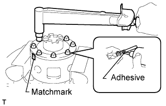 |
Coat the threads of the bolts and pinion shafts with adhesive.
Align the matchmarks of the case and cover.
Using a T10 "TORX" socket, install the 5 bolts and 3 pinion shaft pins.
| 3. INSTALL REAR DIFFERENTIAL CASE BEARING |
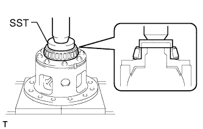 |
Differential Cover Side:
Using SST and a press, press the side bearing onto the differential cover.
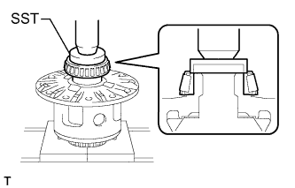 |
Ring Gear Side:
Using SST and a press, press the side bearing onto the differential case.
| 4. INSTALL DIFFERENTIAL RING GEAR |
Clean the threads of the bolts and differential case with non-residue solvent.
Clean the contact surface of the differential case and ring gear.
 |
Heat the ring gear to about 100°C (212°F) in boiling water.
Carefully take the ring gear out of the boiling water.
After the moisture on the ring gear has completely evaporated, quickly align the matchmarks on the ring gear and differential case and set the ring gear onto the differential case. Then temporarily install the 12 bolts so that the bolt holes in the ring gear and differential case are aligned.
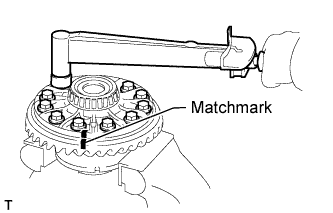 |
After the ring gear cools down sufficiently, remove the 12 bolts. Then apply thread lock adhesive to the 12 bolts and install them.
| 5. INSPECT RUNOUT OF DIFFERENTIAL RING GEAR |
Place the bearing outer races on their respective bearings.
Install the assembled plate washers to the side bearing.
Install the differential case to the differential carrier.
Align the matchmarks on the bearing caps and differential carrier.
Install and uniformly tighten the 4 bolts a little at a time.
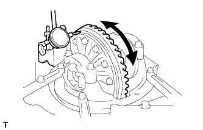 |
Using a dial indicator, check the ring gear runout.
Remove the differential case.
| 6. INSTALL REAR DRIVE PINION FRONT TAPERED ROLLER BEARING |
 |
Using SST and a press, press in the front bearing outer race.
| 7. INSTALL REAR DRIVE PINION REAR TAPERED ROLLER BEARING |
 |
Using SST and a press, press in the rear bearing outer race.
| 8. INSTALL REAR DRIVE PINION REAR TAPERED ROLLER BEARING |
Install the washer to the drive pinion.
 |
Using SST and a press, press the rear bearing into the drive pinion.
| 9. INSPECT DRIVE PINION PRELOAD |
Install the drive pinion and front bearing.
Install the oil slinger.
 |
Using SST, install the companion flange.
 |
Using SST to hold the flange, adjust the drive pinion preload by tightening the nut.
 |
Using a torque wrench, measure the preload.
| Bearing | Specified Condition |
| New | 1.0 to 1.7 N*m (11 to 17 kgf*cm, 10 to 14 in.*lbf) |
| Reused | 0.9 to 1.4 N*m (9 to 13 kgf*cm, 8 to 12 in.*lbf) |
| 10. INSTALL REAR DIFFERENTIAL CASE SUB-ASSEMBLY |
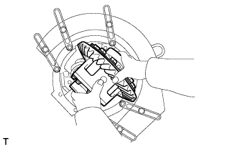 |
Place the bearing outer races on their respective bearings.
Install the assembled plate washer to the side bearing.
Install the differential case to the carrier.
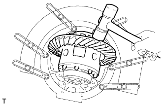 |
Using a plastic-faced hammer, tap on the ring gear to make sure the differential case is aligned with the carrier, and fit the bearings and plate washers into the carrier.
| 11. INSPECT DIFFERENTIAL RING GEAR BACKLASH |
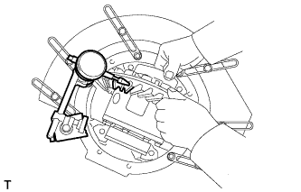 |
Using a dial indicator, measure the backlash while holding the side bearing of the ring gear side.
Select a case cover side plate washer using the backlash as a reference.
| Mark No. | Specified Condition | Mark No. | Specified Condition |
| 01 | 2.66 to 2.68 mm (0.1048 to 0.1056 in.) | 13 | 3.02 to 3.04 mm (0.1190 to 0.1198 in.) |
| 02 | 2.69 to 2.71 mm (0.1060 to 0.1068 in.) | 14 | 3.05 to 3.07 mm (0.1202 to 0.1210 in.) |
| 03 | 2.72 to 2.74 mm (0.1072 to 0.1080 in.) | 15 | 3.08 to 3.10 mm (0.1212 to 0.1220 in.) |
| 04 | 2.75 to 2.77 mm (0.1084 to 0.1091 in.) | 16 | 3.11 to 3.13 mm (0.1225 to 0.1233 in.) |
| 05 | 2.78 to 2.80 mm (0.1095 to 0.1103 in.) | 17 | 3.14 to 3.16 mm (0.1237 to 0.1245 in.) |
| 06 | 2.81 to 2.83 mm (0.1107 to 0.1115 in.) | 18 | 3.17 to 3.19 mm (0.1249 to 0.1257 in.) |
| 07 | 2.84 to 2.86 mm (0.1119 to 0.1127 in.) | 19 | 3.20 to 3.22 mm (0.1261 to 0.1269 in.) |
| 08 | 2.87 to 2.89 mm (0.1131 to 0.1139 in.) | 20 | 3.23 to 3.25 mm (0.1273 to 0.1281 in.) |
| 09 | 2.90 to 2.92 mm (0.1143 to 0.1150 in.) | 21 | 3.26 to 3.28 mm (0.1284 to 0.1292 in.) |
| 10 | 2.93 to 2.95 mm (0.1154 to 0.1162 in.) | 22 | 3.29 to 3.31 mm (0.1296 to 0.1304 in.) |
| 11 | 2.96 to 2.98 mm (0.1166 to 0.1174 in.) | 23 | 3.32 to 3.34 mm (0.1308 to 0.1316 in.) |
| 12 | 2.99 to 3.01 mm (0.1178 to 0.1186 in.) | - | - |
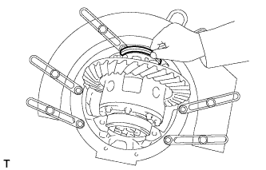 |
Select a ring gear teeth side plate washer so that there is no clearance between the outer race and case.
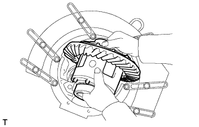 |
Remove the 2 plate washers and differential carrier.
Install the selected plate washer into the lower part of the carrier.
Place the selected plate washer onto the differential case together with the outer races, and install the differential case with the outer races to the carrier.
Using a plastic-faced hammer, tap on the ring gear to make sure the differential case is aligned with the carrier, and fit the bearings and plate washers into the carrier.
Using a dial indicator, measure the ring gear backlash.
Ensure that there is ring gear backlash.
| 12. ADJUST SIDE BEARING PRELOAD |
Remove the ring gear side plate washer.
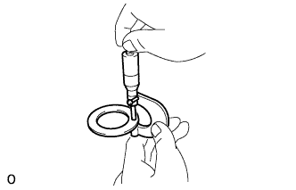 |
Using a micrometer, measure the thickness.
Using the backlash as a reference, select a washer that is 0.06 to 0.09 mm (0.00236 to 0.00354 in.) thicker than the removed washer.
Install the selected plate washer.
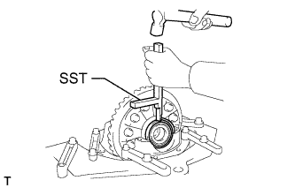 |
Using SST and plastic-faced hammer, tap the plate washer so that it fits to the bearing.
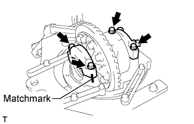 |
Align the matchmarks on the caps and carrier.
Install the 4 bearing cap bolts to the specified torque.
Using a dial indicator, adjust the ring gear backlash until it is within the specification.
| 13. INSPECT TOTAL PRELOAD |
|
Using a torque wrench, measure the preload with the teeth of the drive pinion and ring gear in contact.
| 14. INSPECT TOOTH CONTACT BETWEEN RING GEAR AND DRIVE PINION |
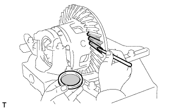 |
Coat 3 or 4 teeth at 3 different positions on the ring gear with Prussian blue.
Turn the companion flange in both directions to inspect the ring gear for proper tooth contact.

| Specified Condition | Specified Condition |
| 1.04 to 1.06 mm (0.0409 to 0.0417 in.) | 1.315 to 1.335 mm (0.0518 to 0.0526 in.) |
| 1.065 to 1.085 mm (0.0420 to 0.0427 in.) | 1.34 to 1.36 mm (0.0528 to 0.0535 in.) |
| 1.09 to 1.11 mm (0.0419 to 0.0437 in.) | 1.365 to 1.385 mm (0.0537 to 0.0545 in.) |
| 1.115 to 1.135 mm (0.0439 to 0.0447 in.) | 1.39 to 1.41 mm (0.0547 to 0.0555 in.) |
| 1.14 to 1.16 mm (0.0449 to 0.0457 in.) | 1.415 to 1.435 mm (0.0558 to 0.0565 in.) |
| 1.165 to 1.185 mm (0.0459 to 0.0467 in.) | 1.44 to 1.46 mm (0.0567 to 0.0575 in.) |
| 1.19 to 1.21 mm (0.0469 to 0.0476 in.) | 1.465 to 1.485 mm (0.0577 to 0.0585 in.) |
| 1.215 to 1.235 mm (0.0478 to 0.0486 in.) | 1.49 to 1.51 mm (0.0587 to 0.0595 in.) |
| 1.24 to 1.26 mm (0.0488 to 0.0496 in.) | 1.515 to 1.535 mm (0.0597 to 0.0605 in.) |
| 1.265 to 1.285 mm (0.0498 to 0.0506 in.) | 1.54 to 1.56 mm (0.0607 to 0.0615 in.) |
| 1.29 to 1.31 mm (0.0508 to 0.0516 in.) | - |
| 15. REMOVE DRIVE PINION COMPANION FLANGE REAR NUT |
|
Using SST to hold the flange, remove the nut.
| 16. REMOVE REAR DRIVE PINION REAR COMPANION FLANGE SUB-ASSEMBLY |
 |
Using SST, remove the companion flange.
| 17. REMOVE REAR DIFFERENTIAL DRIVE PINION OIL SLINGER |
| 18. REMOVE REAR DRIVE PINION FRONT TAPERED ROLLER BEARING |
 |
Using SST, remove the bearing (inner race).
| 19. INSTALL REAR DIFFERENTIAL DRIVE PINION BEARING SPACER |
Install a new spacer to the drive pinion.
| 20. INSTALL REAR DRIVE PINION FRONT TAPERED ROLLER BEARING |
 |
Using SST and a hammer, tap in the bearing (outer race).
Install the bearing (inner race).
| 21. INSTALL REAR DIFFERENTIAL DRIVE PINION OIL SLINGER |
| 22. INSTALL REAR DIFFERENTIAL CARRIER OIL SEAL |
 |
Using SST and a hammer, tap in a new oil seal.
Coat the lip of the oil seal with MP grease.
| 23. INSTALL REAR DRIVE PINION REAR COMPANION FLANGE SUB-ASSEMBLY |
|
Using SST, install the companion flange.
| 24. INSPECT DRIVE PINION PRELOAD |
Coat the threads of a new nut with hypoid gear oil.
 |
Using SST to hold the companion flange, install the nut by tightening it until the standard preload is reached.
|
Using a torque wrench, measure the preload.
| Bearing | Specified Condition |
| New | 1.0 to 1.7 N*m (11 to 17 kgf*cm, 10 to 14 in.*lbf) |
| Reused | 0.9 to 1.4 N*m (9 to 13 kgf*cm, 8 to 12 in.*lbf) |
| 25. INSPECT TOTAL PRELOAD |
|
Using a torque wrench, measure the preload with the teeth of the drive pinion and ring gear in contact.
| 26. INSPECT DIFFERENTIAL RING GEAR BACKLASH |
 |
Using a dial indicator, measure the ring gear backlash.
| 27. INSPECT RUNOUT OF REAR DRIVE PINION REAR COMPANION FLANGE SUB-ASSEMBLY |
 |
Using a dial indicator, measure the runout of the companion flange vertically and laterally.
| Runout | Specified Condition |
| Vertical runout | 0.10 mm (0.00394 in.) |
| Lateral runout | 0.10 mm (0.00394 in.) |
| 28. STAKE DRIVE PINION COMPANION FLANGE REAR NUT |
 |
Using a chisel and hammer, stake the nut.
| 29. INSTALL DIFFERENTIAL LOCK SHIFT ACTUATOR |
Remove any old FIPG material.
Clean the contact surfaces of any residual FIPG material using non-residue solvent.
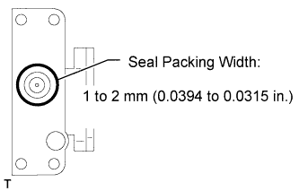 |
Apply seal packing to the actuator.
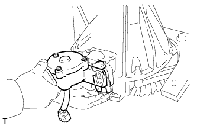 |
Install the shift fork and actuator to the differential and align the shift fork hole with the shift lock.
Clean the threads of the set bolt and fork shaft with non-residue solvent.
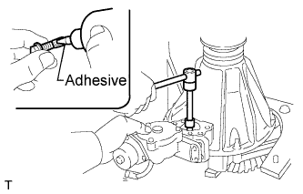 |
Coat the threads of the set bolt with adhesive.
Install the shift fork shaft set bolt.
Engage the sleeve with the dog clutch of the differential case.
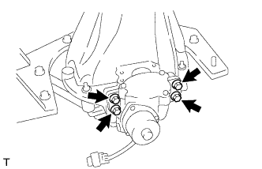 |
Install the 4 bolts.
| 30. INSTALL REAR DIFFERENTIAL LOCK COVER |
Remove any old FIPG material.
Clean the contact surfaces of any residual FIPG material using non-residue solvent.
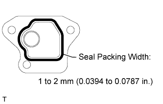 |
Apply seal packing to the cover
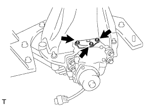 |
Install the cover with the 3 bolts.
| 31. INSTALL NO. 1 TRANSFER INDICATOR SWITCH |
Using a SST, install a new gasket and the indicator switch.

Connect the connector.